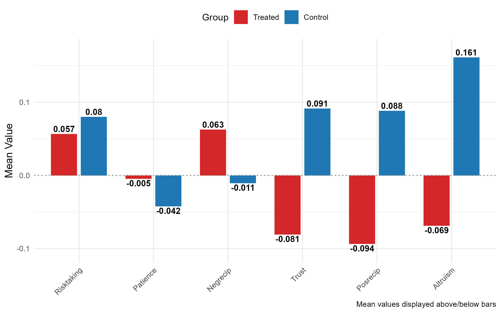

Elvin Mammadov
Data Analyst | Research, EDA & Causal Inference (R)
I am a data analyst with a strong research background, specializing in exploratory data analysis, statistical modeling, and causal inference. I focus on turning complex datasets into clear insights for decision-making.
Skills
- Exploratory Data Analysis (EDA)
- Statistical Analysis & Regression
- Causal Inference (TWFE)
- Data Wrangling & Cleaning
- R|Excel|SQL|Power BI
Projects
Regime Changes and Economic Preferences
Data analysis project examining whether political regime changes experience of individuals have a causal impact on their economic preferences using global survey and institutional data.
- Survey data of 80000 representative individuals from 76 different countries about their economic preferences (GPS) , and Vdem data about democracy score of 195 countries
- Integrated multi-source datasets (V-Dem, GPS, Polity, Maddison)
- Performed exploratory data analysis and trend assessment
- Estimated causal effects using Two-Way Fixed Effects regression
- Conducted robustness checks with alternative regime definitions
Age distribution of survey respondents, showing that the sample is concentrated in working-age cohorts.

Treatment Effects
Comparison of treatment and control groups based on regime change experience indicates statistically significant differences in trust, reciprocity, patience and altruism.

The Effect of NO₂ Emissions on Rental Prices in Dresden
This project examines the relationship between nitrogen dioxide (NO₂) emissions and apartment rental prices in Dresden. The analysis investigates whether higher air pollution levels are associated with lower rental prices and explores how proximity to the main train station influences housing costs.
- Combined air pollution data with apartment-level rental listings
- Analyzed spatial and environmental determinants of rental prices
- Estimated correlations between NO₂ concentration and housing costs
- Controlled for apartment characteristics such as size and location
Data Overview
The table reports descriptive statistics for apartment characteristics, rental prices. The observed variation across housing attributes and pollution measures provides a solid foundation for analyzing the impact of air quality on rental prices in Dresden.

View full descriptive statistics table
Key Findings
The results indicate that several apartment characteristics, including size, availability of barrier-free access, and the presence of a built-in kitchen, have a statistically significant impact on rental prices. Nitrogen dioxide (NO₂) emissions also exhibit a significant effect on rents when measured as a continuous variable. However, when emissions are categorized into groups, their impact becomes negligible. A plausible explanation is that overall NO₂ levels in Dresden are relatively low, resulting in limited variation across emission categories. As a result, categorical measures fail to capture meaningful differences, whereas continuous NO₂ concentrations reveal a substantial influence on rental prices.
What I’m Looking For
Remote data analyst roles, research analyst positions, and projects involving applied statistics, causal inference, and policy-related data analysis.
Contact
GitHub: github.com/mammadov-elvin
Website: mammadov-elvin.github.io